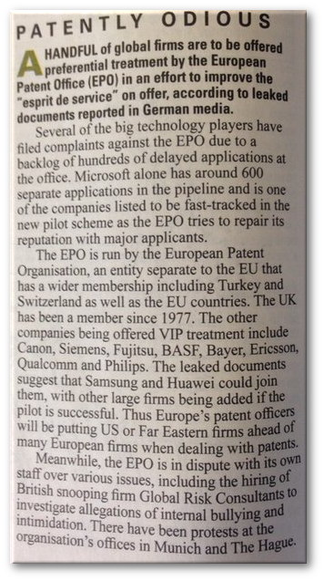

10.30.15
Private Eye Covers the EPO Scandals, Says EPO Hired ‘British Snooping Firm Global Risk Consultants’
Summary: Popular British paper covers the EPO scandals and focuses on revelations from Techrights
FOR THOSE who are not British, Private Eye, to quote Wikipedia, “has been a prominent critic and lampooner of public figures and entities that it deems guilty of any of the sins of incompetence, inefficiency, corruption, pomposity or self-importance and it has established itself as a thorn in the side of the British establishment.” It has a circulation of 228,264 people.
We were gratified to have found out that Private Eye, like Belgian TV for instance (also very mainstream, not some niche audience like a publication for technical readers or lawyers), decided to write about EPO abuses. It’s not very often that we find articles about these abuses in English, partly because EPO is centered around Holland and Germany (where the languages are different and rarely understood by British journalists).
“I’m not sure if you’ve seen this,” wrote a reader to us, “but Private Eye did a write up of the EPO showing favouritism to Microsoft in its latest issue.”
“A bit of a surprising neutral tone from the Eye and the opening line says they “are to be offered preferential treatment”. They already have been since April!”
Here is a camera copy of the article.

We have manually put that into textual form, as follows:
Patently Odious
A HANDFUL of global firms are to be offered preferential treatment by the European Patent Office (EPO) in an effort to improve the “epirit de service” on offer, according to leaked documents reported in German media.
Several of the big technology players have filed complaints against the EPO due to a backlog of hundreds of delayed applications at the office. Microsoft alone has around 600 separate applications in the pipeline and is one of the companies listed to be fast-tracked in the new pilot scheme as the EPO tries to repair its reputation with major applicants.
The EPO is run by the European Patent Organisation, an entity separate to the EU that has a wider membership including Turkey and Switzerland as well as the EU countries. The UK has been a member since 1977. the other companies being offered VIP treatment include Canon, Siemens, Fujitsu, BASF, Bayer, Ericsson, Qualcomm and Philips. The leaked documents suggest that Samsung and Huawei could join them, with other large firms being added if the pilot is successful. Thus Europe’s patent officers will be putting US or Far Eastern firms ahead of many European firms when dealing with patents.
Meanwhile, the EPO is in dispute with its own staff over various issues, including the hiring of British snooping firm Global Risk Consultants to investigate allegations of internal bullying and intimidation. There have been protests at the organisation’s offices in Munich and The Hague.
We are not sure what they mean by “Global Risk Consultants”, perhaps just another name for CRG or some kind of sub-division (or maybe an editorial error). It is described as a “British snooping firm”, which isn’t the description CRG publicly gives of itself, for obvious reasons. We wrote about CRG in some articles including the ones below. █
- Techrights Confirmed as a Target of EPO Surveillance, With Help From Control Risks Group (CRG)
- More Utter Shame Unveiled at Battistelli’s EPO: Intimidation Tactics With Help From ‘Control Risks’
- Süddeutsche Zeitung Article About the EPO’s Investigation Unit and Control Risks Group
- The EPO Sinks Deeper in a Scandal After Paying Public Money for Military-Connected Control Risks to Stalk Journalists and Staff
- EPO May be Creating Its Own Lawless NSA (or GCHQ) With Control Risks Group Deal
- EPO Officially Confirms That It Specifically Hired Control Risks Group (CRG) to Spy on Journalists and Their Sources
- EPO Corruption Compared to FIFA Corruption While ‘Control Risks’ Helps EPO Hide/Suppress Evidence of Corruption; Calls on German Authorities to Crack Down on Both
- The European Patent Office Has Become Militarised
- EPO Reluctantly (and Privately) Confirms Giving Public Money for Military-connected ‘Control Risks’ to Spy on Journalists and Their Sources While Techrights is Under Fresh DDOS Attacks
- EPO Data Protection Officer ‘Just a Dictator’s Minion’, Approved Keyloggers and Hidden Cameras
- European Patent Office (EPO) Now Uses Keyloggers to Spy on Staff
- Investigation Unit a Complete Farce Inside the EPO
- Süddeutsche Zeitung Says Talking Helps While EPO Management Back-stabs Other Side of the Table
- EPO Surveillance, Threats, and Patronisation of Dutch Legal System Covered in Dutch Article From De Volkskrant


 Content is available under CC-BY-SA
Content is available under CC-BY-SA
katkatkat said,
October 31, 2015 at 12:01 pm
Dear Dr Schestowitz, the new format of this blog dedicated to the EPO provides a very clear overview of the issues. Well done! Congratulations!
With you frequent publications, you are providing an excellent service to general public information, to truth and justice. As an insider, I know that the disclosures and comments you make are the sad truth about what used to be a great European institution. Hopefully, the outrageous management of the EPO by Battistelli and his group will soon come to an end. Let us keep this bunch of unworthy people under pressure. Scandalous I find that Germany tolerates on its ground such a shame. This cannot be forgiven. Please, go on, Dr Schestowitz, and keep them under pressure. Many thanks for your persistence and courage.